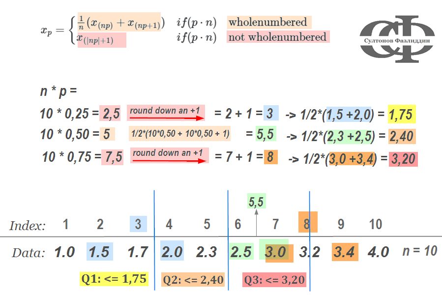

"Я немного скептически отношусь к статистике. По статистике, и миллионер, и бедняк имеют по полмиллиона каждый." ~ Франклин Рузвельт.
Statistics
Uzbek
R
Python
Mean
Median
Modal
Quartil
Box-Plot
Author
Fazliddin Sultonov
Published
Jun 9, 2024
subcribe.html
Tavsiflovchi statistika (descriptive statistics) yordamida ma’lumotlar umumlashtirilgan tarzda taqdim etiladi va tavsiflanadi, ya’ni Tavsiflovchi statistika ko’plab daraxtlar (berilgan ko’p ma’lumotlar) o’rniga o’rmonni (masalan o’rta qiymat) ko’rsatadi (Sauer 2019). Demak bunda ma’lumotlar ular haqida birinchi taassurotni olish uchun explorativ tavsiflanadi. Bu narsa Machine Learning sohasida Feature Engineering deb ham ataladi (Alby 2022). Tavsiflovchi statistikada yoki ma’lumotlarni tavsifiy tahlil qilishda maqsadi, ko’rsatgich raqamlar (key figures), jadvallar va grafiklar yordamida ma’lumotlarni taqsimlashning umumiy ko’rinishda tasvirlab berishga qaratiladi. Tavsiflovchi statistikada asosiy o’lchovlar ma’Lumotlar to’plamini ikki holatda tasvirlaydi: ma’lumotlarni joylashuvi va tarqalishi.
Ko’p hollarda ma’lumotlar bir markaziy nuqta atrofida to’planadi. Bunda har qanday ma’lumotni tavsiflash uchun ma’lum bir odatiy quymatni ko’rsatish yetarli bo’ladi. Markaziy tendensiyasi (engl. Estimates of Location) ma’lumotlarni ana shu odatiy quymatga yaqinlashuvini ifodalaydi, boshqacha aytganda qaysi qiymat ma’lumotlar to’plami taqsimotining markazini eng yaxschi ifodalay oladi. Bularga arifmetik o’rtacha arifmetik qiymat, mediana (engl median) va mode lar kiradi,
flowchart LR
A("Estimates of Location\n(Markaziy tendensiya)")
B[["- Mean\n- Median\n- Modus\n- Quantil"]]
A --> B
style A text-align:center;
Markaziy tendensiya
flowchart LR
A("Estimates of Variability\n(Variatsiya/tarqalish)")
B[["- Standard deviation (standart og'ish)\n- Variance (Dispersiya)\n- Range (Tafovut)\n- Interquartile range, IQR (Kvartillararo tafovut)"]]
A:::myClass --> B
classDef myClass style: text-align:center
Variatsiya/Tarqalish
Mean
O’rtacha arifmetik qiymat, (engl. mean) analitik o’rta qiymatlar ichida eng ko’p tarqalgan turi hisoblanadi. Arifmetik o’rta qiymat barcha qiymatlarni \((x_1, x_2, ..., x_n)\) qo’shish va yig’indini qiymatlar soniga (n) bo’lish yo’li bilan hisoblanadi: \[
\bar{x} = \frac{x_1+x_2+x_3+...+x_n}{n} = \frac{1}{n}\sum_{i = 1}^{n}{x_i}
\] Aytaylik, biz ko’chada so’rov o’tkazdik va odamlardan ularning kasbi, yoshi, bo’yi va daromadi haqida so’radik.
Arifmetik o’rta qiymatni (yozishga qulay bo’lishi uchun bundan keyin mean deb ketiladi) hisoblash uchun R va Python da mean() funksiyasi bor. Mean hisoblashda etibor berish kerak bolgan narsa, ma’lumotlar metrik bo’lishi kerak. Misoldagi yosh va daromad xarakteristikalari (variable) uchun mean R va Pythonda quyidagicha hisoblanadi:
m_age <-mean(df$age); m_inc <-mean(df$income)glue::glue("mean of age: {m_age}\nmean of income: {round(m_inc, 2)}")#> mean of age: 51#> mean of income: 2027.78
age_m = r.df.age.mean(); inc_m = r.df["income"].mean()print(f"mean of age: {age_m}\nmean of income: {round(inc_m, 2)}")#> mean of age: 51.0#> mean of income: 2027.78
Interpretatsiya
To’qqiz respondentning (ya’ni biz so’ragan insonlar) yoshi bo’yicha o’rtacha arifmetik ko’rsatkich: 51 va daromad uchun: 2161. Demak biz, respondentlar haqidagi ma’lumotlarni bitta odatiy qiymat (bu yerda o’rta qiymat) bilan tasvirlashimisi mumkin, yani ularni o‘rtacha 51 yoshda va oyiga o‘rtacha 2027,78 (evro, dollar, so’m, nima bo’sayam) maosh oladi, deb umumlashtirib aytishimiz mumkin.
Median
Mediana - tartiblangan qiymatlar o’rtasida joylashgan qiymat hisoblanadi. U taqsimotni ikkita teng yarimga ajratadi va taqsimotning birinchi yarmi undan kichikroq (agar taqsimotda takrorlanuvchi sonlar bo’lmasa) va ikkinchi yarmi undan kattaroq bo’ladi.
Mediana hisoblash uchun R va Pythonda median() funksiyasi mavjud. Mediana metrik va ordinal(tartibli) qiymatlarni talab qiladi. Quyida misoldagi respondentlarning bo’yi va daromadi uchun median hisoblangan.
med_tall <-median(df$tall); med_inc <-median(df$income)glue::glue("median of tall: {med_tall}\nmedian of income: {med_inc}")#> median of tall: 1.73#> median of income: 2050
import pandas as pdtall_med = r.df.tall.median(); inc_med = r.df["income"].median()print(f"median of tall: {tall_med}\nmean of income: {inc_med}")#> median of tall: 1.73#> mean of income: 2050.0
Interpretatsiya
To’qqiz respondentning bo’yi bo’yicha o’rtacha ko’rsatkich: 1,73 va daromad uchun: 2050. Korsatgichlardan xulosa qilib shunday deyish mumkin: respondentlarning yarmini (50%) bo’yi 1,73 metrdan pastroq va oyiga 2050 dan kam (evro, dollar, nima bo’sayam) maosh oladi. Yoki aksincha, so’ralganlarning yarmini (50%) bo’yi 1,73 metrdan baland va oyiga 2050 dan ortiq daromad topadi.
Modus
ma’lumotlar to’plamida eng ko’p uchraydigan qiymat - mode yoki modal qiymat deyiladi. Mode uchun qiymatni metrik, tartibli va nominal (kategorik) ma’lumotlar uchun hisoblanishi mumkin. Nominal ma’lumotlar uchun modal o’rtacha qiymatni aniqlash uchun yagona usuldir. R da mode uchun bevosita funksiya yo’q, modal qiymatni ko’rsatish uchun table funksiyasidan foydalanish mumkin- Bu funksiya qaysi qiymat nechi marta uchragani qaytaradi. Uchragan sonlari bo’yicha eng kattasi mode hisoblanadi.
show the code
cat("Frequence table for variable profession:")table(df$profession) # Häufigkeitstablle# Modus-Maximaler Wert von der Freq.Tablecat("Mode for variable profession - Max value of FreqTable: ", max(table(df$profession)))cat("\n\nFrequence table for variable tall:")table(df$tall) # Häufigkeitstabllecat("Mode for variable tall - Max value of FreqTable: ", max(table(df$tall)))
#> Frequence table for variable profession:
#> Doctor Pensioner Professor Student Teacher
#> 2 3 1 2 1
#> Mode for variable profession - Max value of FreqTable: 3
#>
#> Frequence table for variable tall:
#> 1.68 1.7 1.72 1.73 1.75 1.77 1.78
#> 1 1 1 2 2 1 1
#> Mode for variable tall - Max value of FreqTable: 2
show the code
#from statistics import mode# tall_med = r.df.tall.median(); inc_med = r.df["income"].median()# print(f"median of tall: {tall_med}\nmean of income: {inc_med}")freq_prof = r.df["profession"].value_counts() # FreqTable for var professionmodi_prof = r.df["profession"].value_counts().max() # Modi for var professionfreq_tall = r.df["tall"].value_counts() # FreqTable for var tallmodi_tall = r.df["tall"].value_counts().max() # Modi for var tallprint("Frequence table for variable profession:")print(freq_prof)print(f">> Mode for variable profession - Max value of FreqTable: {modi_prof}")print("\nFrequence table for variable tall:")print(freq_tall)print(f">> Mode for variable tall - Max value of FreqTable: {modi_tall}\n")
#> Frequence table for variable profession:
#> profession
#> Pensioner 3
#> Doctor 2
#> Student 2
#> Teacher 1
#> Professor 1
#> Name: count, dtype: int64
#> >> Mode for variable profession - Max value of FreqTable: 3
#>
#> Frequence table for variable tall:
#> tall
#> 1.75 2
#> 1.73 2
#> 1.72 1
#> 1.68 1
#> 1.70 1
#> 1.78 1
#> 1.77 1
#> Name: count, dtype: int64
#> >> Mode for variable tall - Max value of FreqTable: 2
Interpretatsiya
Modani izohlab beradigan aytarli ko’p narsa yo’q. Misoldagi ksb va bo’y uchun hisoblangan modal qiymatlardan xulosa qilib aytish bo’lgan narsa shuki, respondentlarning aksariyati nafaqaxo’rlar yoki ko’pchilikning bo’yi 1,73 metr.
Outliers: Mean vs Median
Ko’p holatlar mavjud bo’lib, bunda mediana o’rtacha arifmetik qiymatdan yaxshiroq o’lchov birligi sifatida o’zini ko’rsata oladi, masalan, ma’lumotlar to’plamida ekstremal qiymatlar (engl. outliers) bo’lsa. Haddan tashqari holatlarda, medianaga natijani buzishi mumkin bo’lgan ekstremallar ta’sir qilmaydi. Misol tariqasida, biz yuqoridagi misolini ekstremal qiymatni qo’shish orqali kengaytiramiz. Tasavvur qilamiz, 9 ta odamdan keyin yana bitta oxirgi odamdan ma’lumotlarini oldik, aytaylik u tiktoker yoki blogger bo’lsin, ya’ni yosh (19), baland bo’yli (1,84) va boshqa respondentlarga qaraganda ancha ko’proq daromad topadi(5600). Bizning malumotlar to’plamida bu ekstremal holatni ifodalaydi. Endi bizning asl o’rtachaa arifmetik qiymatimiz o’zgaradi va yuqoriroq bo’ladi (chunki yana bir respondent qo’shildi).
show the code
v <-data.frame("Bloger", 19, 1.84, 5600); names(v) <-names(df)extrem <-rbind(df,v)cat("New df with outlier:\n")tail(extrem, n =3)# Meanscat("\nWithout outlier:\n")glue::glue("income: mean - {round(mean(df$income),2)}, median - {median(df$income)}\nage: mean - {mean(df$age)}, median - {median(df$age)}")#glue::glue("Median income: {median(df$income)}\nMedian age: {median(df$age)}")cat("\nWith outlier:\n")glue::glue("income: mean - {mean(extrem$income)}, median - {median(extrem$income)}\nage:mean - {mean(extrem$age)}, median - {median(extrem$age)}")#glue::glue("Median income: {median(extrem$income)}\nMedian age: {median(extrem$age)}")
#> New df with outlier:
#> profession age tall income
#> 8 Student 25 1.77 950
#> 9 Pensioner 82 1.73 1100
#> 10 Bloger 19 1.84 5600
#>
#> Without outlier:
#> income: mean - 2027.78, median - 2050
#> age: mean - 51, median - 51
#>
#> With outlier:
#> income: mean - 2385, median - 2125
#> age:mean - 47.8, median - 49
Yuqorida korinib turganidek, ekstremal holatda o’rtacha arifmetik qiymat daromad uchun 2.027,78 dan 2.385 gacha o’zgardi (o’sdi). A medianada esa o’zgarish uncha katta emas, 2.050 dan 2.125 ga o’zgardi xolos. Bunday holatda arifmetik qiymat hisoblanib, o’rtacha daromad 2.385 deb xulosa qilinsa, ma’lumotlar xato tahlil qilingan bo’ladi. Ushani uchun, agar malumotlar to’plamida ekstremal qiymatlar bo’lsa, o’rtacha qiymatni hisoblash uchun* o’rtacha arifmetik emas medianani ishlatgan afzalroq* bo’ladi.
Usage
O’rtacha qiymat, biz ko’rganimizdek, turli yo’llar bilan aniqlanadi. Shuning uchun vaziyatga qarab (masalan, ma’lumotlarning qaysi turga ega ekanligi) qaysi o’lchovi birligi qaysi vaziyatga (ma’lumotlarga) eng mos kelishini oldindan ko’rib chiqish maqasadga muvofiq bo’ladi. Bunga mani qisqacha xulosam:
nominal yoki kategorik ma’lumotlar uchun mode ishlatiladi, chunki boshqa markaziy tendensiya o’lchovlari bunqa ma’lumot turlariga mos kelmaydi.
Mediana dan foydalanish qachonki oqilona bo’ladi, agar
ma’lumotlar ordinal yoki tartibli bo’lsa.
taqsimotda extremal holatlar borligini bilsak.
Agar ma’lumotlar va nosimmetrik taqsimot mavjud bo’lsa, unda arifmetik o’rtacha eng mos keladi miqdoriy (количественный) bo’lsa va taqsimot symmetrik bo’lsa, unda o’rtacha arifmetik qiymat dan foydalanish eng tO’g’ri yo’l hosoblanadi.
Quantile & Quartile
Ma’lumotni ikkita teng o’lchamga ajratadigan medianadan farqli o’laroq, kvanti tariblangan ma’lumotlarni turli o’lchamdagi bo’limlarga ajratadi, ya’ni \(x_p\) kavntil yoki x% (px100) kvantillarga bo’ladi. Kvantlarni bo’laklarga ajratilgan bo’limlardeyish mumkin. Misol uchun, 10% kvantil yoki 0,1 kvantil taqsimotdagi ma’lumotlarning 10% bu kvantil ostida, qolganlari esa (1-p, ya’ni 90%) uning ustida joylashganligini aytadi. Agar ma’lumotlarni to’rtta teng qismga ajratilsa, bular maxsus kvantillar, ya’ni kvartillar hisoblanadi.
0,25/25%-kvantil = quyi/birinchi kvartil = Q1 - n ma’lumotlarning kamida 25% \(x_{0,25}\) dan kichik yoki teng ekanligini bildiradi.
0,50/50%-kvantil = o’rta/ikkinchi kvartil = Q2 - medianaga teng, n ma’lumotlarning kamida 50% \(x_{0,50}\) dan kichik yoki katta.
0,75/75%-kvantil = yuqori/uchinchi kvartil = Q3 - n ma’lumotlarning kamida 75% \(x_{0,75}\) dan kichik yoki teng ekanligini bildiradi.
Misol tariqasida, tasavvur qilaylik, biz kichik so’rov o’tkazamiz va 10 kishidan kuniga nechi soat vaqtini uyali telefonda o’tkazishini so’raymiz. Aytaylik, javob quyidagicha (raqamlar o’ylab topilgan):
Kvartillarni hisoblash uchun avval ma’lumotlar to’plamlari soni (n) ni p ga (0,25, 0,50, 0,75) ko’paytirish \(n*p\) kerak. Natija butun son yoki butun son emasligiga qarab, keyingi hisoblash uchun ushbu formuladan foydalaniladi: \[x_p = \begin{cases}
\frac{1}{n}(x_{(np)} + x_{(np+1)}) & if (p\cdot n) &\text{wholenumbered}\\
x_{(|np|+1)} & if (p\cdot n)&\text{not wholenumbered}\end{cases}\]
Quyida kvartillarni hisoblashni grafik tarzda tasvirlangani:
 Yaxshiyamki, hamma narsani qo’lda hisoblash shart emas. Buning uchun R da quantile() funksiyasi mavjud. Bundan tashqari, summary()(Pythondagi describe() funksiyasi kabi) funktsiyasi o’rtacha arifmetik qiymat, mediana, Q1, Q2 = mediana, Q3, min va max kabi markaziy tendensiya o’lchovlari ko’rsatish orqali ma’lumotlarning birinchi taassurotini beradi.
show the code
cat("Vector time: Qauartile: 25%-, 50%-, 75%- Quantile\n")quantile(time) # Qauartile: 25%-, 50%-, 75%- Quantilecat("\nVector time: 0,6- Quantil:\n")quantile(time, 0.60) # 60%- Quantilcat("\nVector time: Summary\n")summary(time) # Summary for variable incomecat("\nDescriptive measures with summary() for df:\n")summary(df)# summary(df$age) # Summary for selected variable (age)
#> Vector time: Qauartile: 25%-, 50%-, 75%- Quantile
#> 0% 25% 50% 75% 100%
#> 1.000 1.775 2.400 3.150 4.000
#>
#> Vector time: 0,6- Quantil:
#> 60%
#> 2.7
#>
#> Vector time: Summary
#> Min. 1st Qu. Median Mean 3rd Qu. Max.
#> 1.000 1.775 2.400 2.460 3.150 4.000
#>
#> Descriptive measures with summary() for df:
#> profession age tall income
#> Length:9 Min. :21 Min. :1.680 Min. : 950
#> Class :character 1st Qu.:39 1st Qu.:1.720 1st Qu.:1100
#> Mode :character Median :51 Median :1.730 Median :2050
#> Mean :51 Mean :1.734 Mean :2028
#> 3rd Qu.:68 3rd Qu.:1.750 3rd Qu.:2600
#> Max. :82 Max. :1.780 Max. :3500
Pythonda ham quantile() funksiyasi mavjud bo’lib, kerakli kvantil(lar)ni ro’yxat formatida qavs ichiga kiritilishi kerak. Funktsiya Pandas yoki NumPy modullari orqali ishlatiladi.
show the code
print("Quartile for one variable (age):")r.df["age"].quantile([0.25,0.5,0.75])print("\nQuantile for more variables:")r.df[["age", "income", "tall"]].quantile([.1, .25, .5, .75], axis =0)# with describe()print("\nDescriptive measures with discribe() for df:")# r.df[["age", "tall"]].describe() # for selected variablesr.df.describe()
#> Quartile for one variable (age):
#> 0.25 39.0
#> 0.50 51.0
#> 0.75 68.0
#> Name: age, dtype: float64
#>
#> Quantile for more variables:
#> age income tall
#> 0.10 24.2 1030.0 1.696
#> 0.25 39.0 1100.0 1.720
#> 0.50 51.0 2050.0 1.730
#> 0.75 68.0 2600.0 1.750
#>
#> Descriptive measures with discribe() for df:
#> age tall income
#> count 9.000000 9.000000 9.000000
#> mean 51.000000 1.734444 2027.777778
#> std 20.621591 0.032059 986.189355
#> min 21.000000 1.680000 950.000000
#> 25% 39.000000 1.720000 1100.000000
#> 50% 51.000000 1.730000 2050.000000
#> 75% 68.000000 1.750000 2600.000000
#> max 82.000000 1.780000 3500.000000
Interpretatsiya
Kvantillar yoki kvartillar ma’lumotlarni taqsimlashni tasvirlaydi. Bu umumiy taqsimotning ma’lum bir qismi ma’lum bir kvantil/kvartil ostida yoki undan yuqorida joylashgan degan bayonotni berishga imkon beradi. Bular Quartile oder Quartile gibt einen der ersten Überblick von der Datenverteilung. Dadurch kann man die Aussage treffen, dass eine bestimme Teil der gesamten Verteulung liegt unter oder über ein Quantil/Quartil. Nehmen wir das Beispiel von oben mit dem Handy. Uyali telefon haqidagi yuqoridagi misolni olaylik.
# How many time spent you for handy in a day?handy <-c(2.3, 1.7, 3, 2, 2.5, 3.2, 3.4, 1.5, 4, 1)# Quartilequantile(handy)#> 0% 25% 50% 75% 100% #> 1.000 1.775 2.400 3.150 4.000# 0.6 Quantilquantile(handy, 0.6)#> 60% #> 2.7
Bundan ko’rinib turibdiki, 10 respondentning to’rtdan uch qismi (75%) vaqtini 3 soatgacha uyali telefonda o’tkazadi yoki kvartil 0,6 - respondentlarning 60 foizi kuniga 2,7 soatgacha vaqtini uyali telefonda yo’qotadi.
Box-Plot
Tavsiflash tahlilini amalga oshirishda, ma’lumotlarning harakatlari haqida birinchi taassurot olish uchun, ayniqsa ma’lumotlar to’plami katta bo’lsa, ko’pincha grafik usullardan ham foydalananiladi. Eng kop qo’llanaliganlaridan bu box-plot dir. U ma’lumotlarni asosan 5 ta asosiy o’lchamga (\(x_{min}\), \(x_{0,25}\), \(x_{0,50}\), \(x_{0,75}\), \(x_{max}\)) jamlaydi va ularni grafik tarzda aks ettiradi. Quyida box-ploti tasvirlangan grafik keltirilgan.
Box-Plot
R da box plot uchun basis funktsiyalar ichida boxplot() funksiyasi ham mavjud. Box-plotni ggplot2 paketi orqali ham R da yaratish mumkin. Pythonda ham bu funksiya matplotlib yoki seaborn modullarida mavjud.
import matplotlib.pyplot as plt# Create a boxplot for the desired columnplt.boxplot(r.extrem["age"], showmeans =True, meanline =True, showfliers =False)# Add labels and titleplt.xlabel("")plt.ylabel("age")plt.title("A sample Box-Plot")# Show the plotplt.show()
#> {'whiskers': [<matplotlib.lines.Line2D object at 0x0000028267B37230>, <matplotlib.lines.Line2D object at 0x0000028267B37500>], 'caps': [<matplotlib.lines.Line2D object at 0x0000028267B37800>, <matplotlib.lines.Line2D object at 0x0000028267B37B00>], 'boxes': [<matplotlib.lines.Line2D object at 0x00000282678E6480>], 'medians': [<matplotlib.lines.Line2D object at 0x0000028267B37DD0>], 'fliers': [], 'means': [<matplotlib.lines.Line2D object at 0x0000028267B7C110>]}
Yuqoridagi box-plot misoldagi dataframening age(yosh) ustuni(variable) uchun yaratilgan. Grafikda ko’rinib turganidek, ma’lumotlarning yarmi (50%) quti (IQR) ichida joylashgan, 25% quti yuqorisida va 25% quti ostida (grafikdagi quti tashqarisidagi nuqta-nuqta chiziqlar) joylashgan. Biz buni shunday talqin qilishimiz mumkin: respondentlarning/odamlarning 50 foizi 25 yoshdan 68 yoshgacha. O’rtadagi tekis chiziq mediana = 51, kesilgan chiziq esa o’rtacha arifmetik qiymat = taxminan 49 (o’rtacha arifmetik qiymatni grafikga qo’shish mumkin, lekin box-plotning tarkibiy/asosiy tasvirlaydigan o’lchamlariga kirmaydi), bundan kelib chiqib, so’rovda qatnashganlarning o’rtacha yoshi 50 yoshni tashkil qiladi degan xulosaga kelish mumkin. Respondentlarning 25 foizi 25 yoshgacha, 25 foizi 68 yoshdan yuqori, va qayd etilganidek, 50 foizi 25-68 yosh orasida.
Alby, Tom. 2022. Data Science in Der Praxis : Eine Verständliche Einführung in Alle Wichtigen Verfahren. Rheinwerk Verlag GmbH,.
Dr. Sandro Scheid, Prof. Dr. Stefanie. 2021. Data Science - Grundlagen, Methoden Und Modelle Der Statistik. Carl Hanser Verlag München.
große Schlarmann, Jörg. 2024. Statistik mit R und RStudio - Ein Nachschlagewerk für Gesundheitsberufe. Krefeld: Hochschule Niederrhein. https://www.produnis.de/R.
Kronthaler, Franz. 2021. Statistik angewandt mit dem R Commander. 2nd ed. Springer-Verlag GmbH Deutschland.
Peter Bruce, Peter Gedeck, Andrew Bruce. 2020. Practical Statistics for Data Scientists. 2nd ed. O’Reilly Media, Inc.,.
Sauer, Sebastian. 2019. Moderne Datenanalyse mit R. Springer Gabler.
Team, DATAtab. 2022. “Tutorials: Erste Schritte Mit DATAtab.”https://datatab.net/.